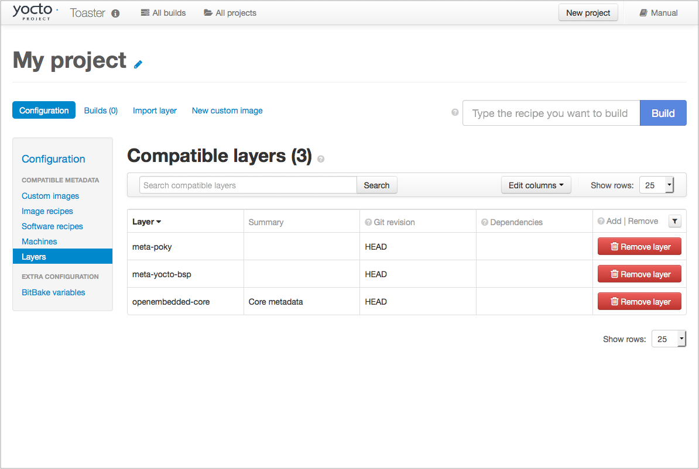
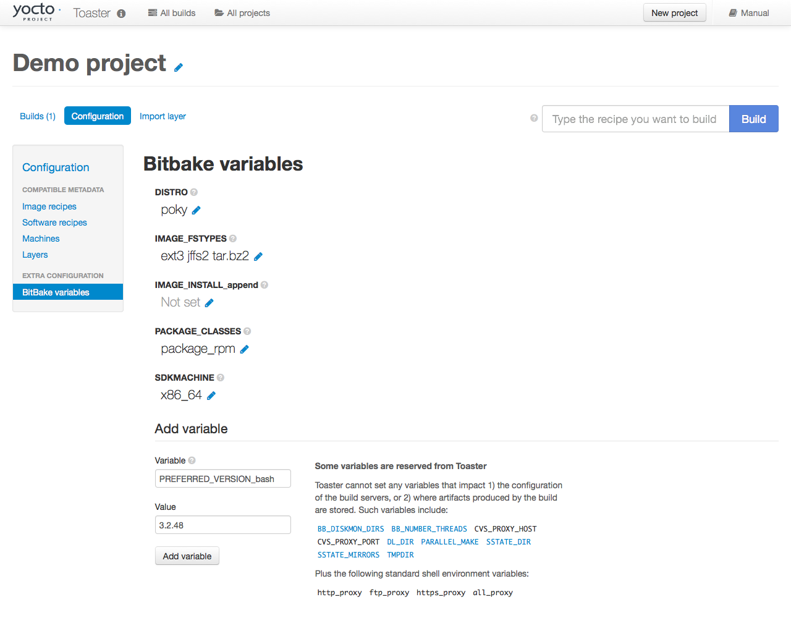
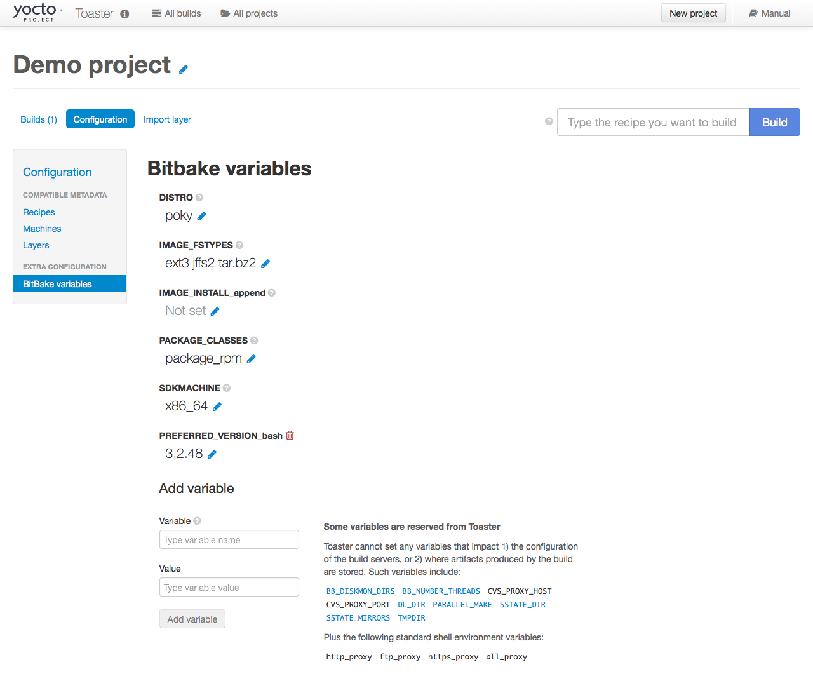

3 Setting Up and Using Toaster
3.1 Starting Toaster for Local Development
Once you have set up the Yocto Project and installed the Toaster system dependencies as described in the "Preparing to Use Toaster" chapter, you are ready to start Toaster.
Navigate to the root of your
Source Directory (e.g. poky):
$ cd poky
Once in that directory, source the build environment script:
$ source oe-init-build-env
Next, from the Build Directory (e.g. poky/build), start Toaster
using this command:
$ source toaster start
You can now run your builds from the command line, or with Toaster as explained in section "Using the Toaster Web Interface".
To access the Toaster web interface, open your favorite browser and enter the following:
http://127.0.0.1:8000
3.2 Setting a Different Port
By default, Toaster starts on port 8000. You can use the WEBPORT
parameter to set a different port. For example, the following command
sets the port to "8400":
$ source toaster start webport=8400
3.3 Setting Up Toaster Without a Web Server
You can start a Toaster environment without starting its web server. This is useful for the following:
Capturing a command-line build's statistics into the Toaster database for examination later.
Capturing a command-line build's statistics when the Toaster server is already running.
Having one instance of the Toaster web server track and capture multiple command-line builds, where each build is started in its own "noweb" Toaster environment.
The following commands show how to start a Toaster environment without starting its web server, perform BitBake operations, and then shut down the Toaster environment. Once the build is complete, you can close the Toaster environment. Before closing the environment, however, you should allow a few minutes to ensure the complete transfer of its BitBake build statistics to the Toaster database. If you have a separate Toaster web server instance running, you can watch this command-line build's progress and examine the results as soon as they are posted:
$ source toaster start noweb
$ bitbake target
$ source toaster stop
3.4 Setting Up Toaster Without a Build Server
You can start a Toaster environment with the "New Projects" feature disabled. Doing so is useful for the following:
Sharing your build results over the web server while blocking others from starting builds on your host.
Allowing only local command-line builds to be captured into the Toaster database.
Use the following command to set up Toaster without a build server:
$ source toaster start nobuild webport=port
3.5 Setting up External Access
By default, Toaster binds to the loop back address (i.e. localhost),
which does not allow access from external hosts. To allow external
access, use the WEBPORT parameter to open an address that connects
to the network, specifically the IP address that your NIC uses to
connect to the network. You can also bind to all IP addresses the
computer supports by using the shortcut "0.0.0.0:port".
The following example binds to all IP addresses on the host:
$ source toaster start webport=0.0.0.0:8400
This example binds to a specific IP address on the host's NIC:
$ source toaster start webport=192.168.1.1:8400
3.6 The Directory for Cloning Layers
Toaster creates a _toaster_clones directory inside your Source
Directory (i.e. poky) to clone any layers needed for your builds.
Alternatively, if you would like all of your Toaster related files and
directories to be in a particular location other than the default, you
can set the TOASTER_DIR environment variable, which takes precedence
over your current working directory. Setting this environment variable
causes Toaster to create and use $TOASTER_DIR./_toaster_clones.
3.7 The Build Directory
Toaster creates a Build Directory within your Source Directory (e.g.
poky) to execute the builds.
Alternatively, if you would like all of your Toaster related files and
directories to be in a particular location, you can set the
TOASTER_DIR environment variable, which takes precedence over your
current working directory. Setting this environment variable causes
Toaster to use $TOASTER_DIR/build as the Build Directory.
3.8 Creating a Django Superuser
Toaster is built on the Django framework. Django provides an administration interface you can use to edit Toaster configuration parameters.
To access the Django administration interface, you must create a superuser by following these steps:
If you used
pip3, which is recommended, to set up the Toaster system dependencies, you need be sure the local user path is in yourPATHlist. To append the pip3 local user path, use the following command:$ export PATH=$PATH:$HOME/.local/bin
From the directory containing the Toaster database, which by default is the Build Directory, invoke the
createsuperusercommand frommanage.py:$ cd poky/build $ ../bitbake/lib/toaster/manage.py createsuperuser
Django prompts you for the username, which you need to provide.
Django prompts you for an email address, which is optional.
Django prompts you for a password, which you must provide.
Django prompts you to re-enter your password for verification.
After completing these steps, the following confirmation message appears:
Superuser created successfully.
Creating a superuser allows you to access the Django administration interface through a browser. The URL for this interface is the same as the URL used for the Toaster instance with "/admin" on the end. For example, if you are running Toaster locally, use the following URL:
http://127.0.0.1:8000/admin
You can use the Django administration interface to set Toaster configuration parameters such as the Build Directory, layer sources, default variable values, and BitBake versions.
3.9 Setting Up a Production Instance of Toaster
You can use a production instance of Toaster to share the Toaster instance with remote users, multiple users, or both. The production instance is also the setup that can handle heavier loads on the web service. Use the instructions in the following sections to set up Toaster to run builds through the Toaster web interface.
3.9.1 Requirements
Be sure you meet the following requirements:
Nota
You must comply with all Apache, mod-wsgi, and Mysql requirements.
Have all the build requirements as described in the "Preparing to Use Toaster" chapter.
Have an Apache webserver.
Have
mod-wsgifor the Apache webserver.Use the Mysql database server.
If you are using Ubuntu, run the following:
$ sudo apt install apache2 libapache2-mod-wsgi-py3 mysql-server python3-pip libmysqlclient-dev
If you are using Fedora or a RedHat distribution, run the following:
$ sudo dnf install httpd python3-mod_wsgi python3-pip mariadb-server mariadb-devel python3-devel
If you are using openSUSE, run the following:
$ sudo zypper install apache2 apache2-mod_wsgi-python3 python3-pip mariadb mariadb-client python3-devel
3.9.2 Installation
Perform the following steps to install Toaster:
Create toaster user and set its home directory to
/var/www/toaster:$ sudo /usr/sbin/useradd toaster -md /var/www/toaster -s /bin/false $ sudo su - toaster -s /bin/bash
Checkout a copy of
pokyinto the web server directory. You will be using/var/www/toaster:$ git clone https://git.yoctoproject.org/poky $ git checkout blacksail
Install Toaster dependencies using the
--userflag which keeps the Python packages isolated from your system-provided packages:$ cd /var/www/toaster/ $ pip3 install --user -r ./poky/bitbake/toaster-requirements.txt $ pip3 install --user mysqlclient
Nota
Isolating these packages is not required but is recommended. Alternatively, you can use your operating system's package manager to install the packages.
Configure Toaster by editing
/var/www/toaster/poky/bitbake/lib/toaster/toastermain/settings.pyas follows:Edit the DATABASES settings:
DATABASES = { 'default': { 'ENGINE': 'django.db.backends.mysql', 'NAME': 'toaster_data', 'USER': 'toaster', 'PASSWORD': 'yourpasswordhere', 'HOST': 'localhost', 'PORT': '3306', } }
Edit the SECRET_KEY:
SECRET_KEY = 'your_secret_key'
Edit the STATIC_ROOT:
STATIC_ROOT = '/var/www/toaster/static_files/'
Add the database and user to the
mysqlserver defined earlier:$ mysql -u root -p mysql> CREATE DATABASE toaster_data; mysql> CREATE USER 'toaster'@'localhost' identified by 'yourpasswordhere'; mysql> GRANT all on toaster_data.\* to 'toaster'@'localhost'; mysql> quit
Get Toaster to create the database schema, default data, and gather the statically-served files:
$ cd /var/www/toaster/poky/ $ ./bitbake/lib/toaster/manage.py migrate $ TOASTER_DIR=`pwd\` TEMPLATECONF='poky' \ ./bitbake/lib/toaster/manage.py checksettings $ ./bitbake/lib/toaster/manage.py collectstatic
In the previous example, from the
pokydirectory, themigratecommand ensures the database schema changes have propagated correctly (i.e. migrations). The next line sets the Toaster root directoryTOASTER_DIRand the location of the Toaster configuration fileTOASTER_CONF, which is relative toTOASTER_DIR. The TEMPLATECONF value reflects the contents ofpoky/.templateconf, and by default, should include the string "poky". For more information on the Toaster configuration file, see the "Configuring Toaster" section.This line also runs the
checksettingscommand, which configures the location of the Toaster Build Directory. The Toaster root directoryTOASTER_DIRdetermines where the Toaster build directory is created on the file system. In the example above,TOASTER_DIRis set as follows:/var/www/toaster/poky
This setting causes the Toaster Build Directory to be:
/var/www/toaster/poky/build
Finally, the
collectstaticcommand is a Django framework command that collects all the statically served files into a designated directory to be served up by the Apache web server as defined bySTATIC_ROOT.Test and/or use the Mysql integration with Toaster's Django web server. At this point, you can start up the normal Toaster Django web server with the Toaster database in Mysql. You can use this web server to confirm that the database migration and data population from the Layer Index is complete.
To start the default Toaster Django web server with the Toaster database now in Mysql, use the standard start commands:
$ source oe-init-build-env $ source toaster start
Additionally, if Django is sufficient for your requirements, you can use it for your release system and migrate later to Apache as your requirements change.
Add an Apache configuration file for Toaster to your Apache web server's configuration directory. If you are using Ubuntu or Debian, put the file here:
/etc/apache2/conf-available/toaster.conf
If you are using Fedora or RedHat, put it here:
/etc/httpd/conf.d/toaster.conf
If you are using openSUSE, put it here:
/etc/apache2/conf.d/toaster.conf
Here is a sample Apache configuration for Toaster you can follow:
Alias /static /var/www/toaster/static_files <Directory /var/www/toaster/static_files> <IfModule mod_access_compat.c> Order allow,deny Allow from all </IfModule> <IfModule !mod_access_compat.c> Require all granted </IfModule> </Directory> <Directory /var/www/toaster/poky/bitbake/lib/toaster/toastermain> <Files "wsgi.py"> Require all granted </Files> </Directory> WSGIDaemonProcess toaster_wsgi python-path=/var/www/toaster/poky/bitbake/lib/toaster:/var/www/toaster/.local/lib/python3.4/site-packages WSGIScriptAlias / "/var/www/toaster/poky/bitbake/lib/toaster/toastermain/wsgi.py" <Location /> WSGIProcessGroup toaster_wsgi </Location>
If you are using Ubuntu or Debian, you will need to enable the config and module for Apache:
$ sudo a2enmod wsgi $ sudo a2enconf toaster $ chmod +x bitbake/lib/toaster/toastermain/wsgi.py
Finally, restart Apache to make sure all new configuration is loaded. For Ubuntu, Debian, and openSUSE use:
$ sudo service apache2 restart
For Fedora and RedHat use:
$ sudo service httpd restart
Prepare the systemd service to run Toaster builds. Here is a sample configuration file for the service:
[Unit] Description=Toaster runbuilds [Service] Type=forking User=toaster ExecStart=/usr/bin/screen -d -m -S runbuilds /var/www/toaster/poky/bitbake/lib/toaster/runbuilds-service.sh start ExecStop=/usr/bin/screen -S runbuilds -X quit WorkingDirectory=/var/www/toaster/poky [Install] WantedBy=multi-user.target
Prepare the
runbuilds-service.shscript that you need to place in the/var/www/toaster/poky/bitbake/lib/toaster/directory by setting up executable permissions:#!/bin/bash #export http_proxy=http://proxy.host.com:8080 #export https_proxy=http://proxy.host.com:8080 #export GIT_PROXY_COMMAND=$HOME/bin/gitproxy cd poky/ source ./oe-init-build-env build source ../bitbake/bin/toaster $1 noweb [ "$1" == 'start' ] && /bin/bash
Run the service:
$ sudo service runbuilds start
Since the service is running in a detached screen session, you can attach to it using this command:
$ sudo su - toaster $ screen -rS runbuilds
You can detach from the service again using "Ctrl-a" followed by "d" key combination.
You can now open up a browser and start using Toaster.
3.10 Using the Toaster Web Interface
The Toaster web interface allows you to do the following:
Browse published layers in the OpenEmbedded Layer Index that are available for your selected version of the build system.
Import your own layers for building.
Add and remove layers from your configuration.
Set configuration variables.
Select a target or multiple targets to build.
Start your builds.
See what was built (recipes and packages) and what packages were installed into your final image.
Browse the directory structure of your image.
See the value of all variables in your build configuration, and which files set each value.
Examine error, warning and trace messages to aid in debugging.
See information about the BitBake tasks executed and reused during your build, including those that used shared state.
See dependency relationships between recipes, packages and tasks.
See performance information such as build time, task time, CPU usage, and disk I/O.
3.10.1 Toaster Web Interface Videos
Here are several videos that show how to use the Toaster GUI:
Build Configuration: This video overviews and demonstrates build configuration for Toaster.
Build Custom Layers: This video shows you how to build custom layers that are used with Toaster.
Toaster Homepage and Table Controls: This video goes over the Toaster entry page, and provides an overview of the data manipulation capabilities of Toaster, which include search, sorting and filtering by different criteria.
Build Dashboard: This video shows you the build dashboard, a page providing an overview of the information available for a selected build.
Image Information: This video walks through the information Toaster provides about images: packages installed and root file system.
Configuration: This video provides Toaster build configuration information.
Tasks: This video shows the information Toaster provides about the tasks run by the build system.
Recipes and Packages Built: This video shows the information Toaster provides about recipes and packages built.
Performance Data: This video shows the build performance data provided by Toaster.
3.10.2 Additional Information About the Local Yocto Project Release
This section only applies if you have set up Toaster for local development, as explained in the "Starting Toaster for Local Development" section.
When you create a project in Toaster, you will be asked to provide a name and to select a Yocto Project release. One of the release options you will find is called "Local Yocto Project".

When you select the "Local Yocto Project" release, Toaster will run your builds using the local Yocto Project clone you have in your computer: the same clone you are using to run Toaster. Unless you manually update this clone, your builds will always use the same Git revision.
If you select any of the other release options, Toaster will fetch the tip of your selected release from the upstream Yocto Project repository every time you run a build. Fetching this tip effectively means that if your selected release is updated upstream, the Git revision you are using for your builds will change. If you are doing development locally, you might not want this change to happen. In that case, the "Local Yocto Project" release might be the right choice.
However, the "Local Yocto Project" release will not provide you with any compatible layers, other than the three core layers that come with the Yocto Project:


If you want to build any other layers, you will need to manually import them into your Toaster project, using the "Import layer" page.

3.10.3 Building a Specific Recipe Given Multiple Versions
Occasionally, a layer might provide more than one version of the same
recipe. For example, the openembedded-core layer provides two
versions of the bash recipe (i.e. 3.2.48 and 4.3.30-r0) and two
versions of the which recipe (i.e. 2.21 and 2.18). The following
figure shows this exact scenario:

By default, the OpenEmbedded build system builds one of the two recipes.
For the bash case, version 4.3.30-r0 is built by default.
Unfortunately, Toaster as it exists, is not able to override the default
recipe version. If you would like to build bash 3.2.48, you need to set
the
PREFERRED_VERSION
variable. You can do so from Toaster, using the "Add variable" form,
which is available in the "BitBake variables" page of the project
configuration section as shown in the following screen:

To specify bash 3.2.48 as the version to build, enter
"PREFERRED_VERSION_bash" in the "Variable" field, and "3.2.48" in the
"Value" field. Next, click the "Add variable" button:


After clicking the "Add variable" button, the settings for PREFERRED_VERSION are added to the bottom of the BitBake variables list. With these settings, the OpenEmbedded build system builds the desired version of the recipe rather than the default version:

